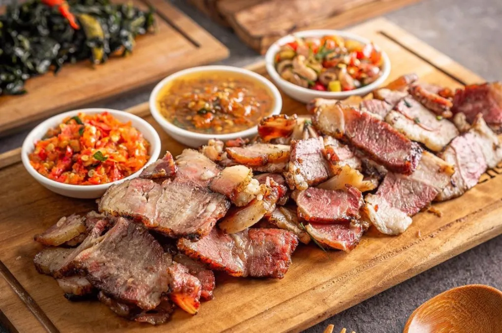

🍛 Masakan Bali & Nusa Tenggara
🍗 Ayam Betutu

- Asal: Bali
- Bahan utama: ayam utuh, rempah khas Bali
- Proses: dibungkus daun pisang lalu dipanggang / kukus lama
- Ciri khas: aroma rempah kuat dan pedas
🥩 lawar bali

- Asal: Bali
- Bahan utama: daging cincang (ikan / ayam / babi)
- Bumbu: bawang, serai, cabai, kelapa parut
- Ciri khas: perpaduan daging,sayuan,kelapa parut dan bumbu khas bali yg dicampur menjadi satu
🐟 Se’i Sapi

- Asal: Nusa Tenggara Timur
- Bahan utama: daging sapi asap
- Proses: diasap dengan kayu kosambi hingga kering
- Ciri khas: aroma asap dan tekstur empuk